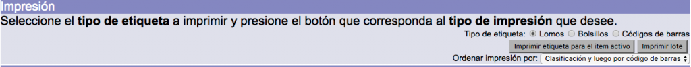
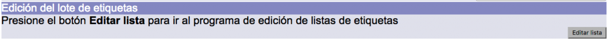

Pantalla de impresión de etiquetas
Esta pantalla presenta los valores que se pueden definir para la creación del patrón de etiquetas.
Se divide en tres secciones:
Parámetros de impresión, que contiene los siguientes campos:
- Formato de etiquetas: define las características físicas de las etiquetas, así como el tipo de impresora que será utilizada.
- Esquema de colocación de información: define la distribución general de los campos de información en las etiquetas, en función del tipo que se elija.
- Imprimir en las etiquetas: define a partir de qué etiqueta comienza el proceso de impresión.
- Gemelas: define la cifra exacta de etiquetas idénticas que serán impresas para cada ejemplar seleccionado, así como la orientación que van a presentar: horizontal o vertical.
- Producir lomos: campo relacionado con el anterior en el que se define a cuáles de las etiquetas gemelas ya indicadas se les va a agregar el dato de lomo.
- Configuración de lomos / tejuelos: define las características concretas de la etiqueta de lomo / tejuelo (campos que serán impresos, tipo y tamaño de la letra).
- Configuración de bolsillos: define las características concretas de la etiqueta de bolsillo (campos que serán impresos, tipo y tamaño de la letra).
- Configuración de códigos de barras: define las características concretas de la etiqueta de código de barras (anchura y altura del código de barras, encabezamiento utilizado).

Impresión, que permite seleccionar cualquiera de los tipos de etiquetas para impresión (lomos / tejuelos, bolsillos y códigos de barras), así como la posibilidad de generar el archivo para el ítem activo (último ejemplar creado o editado) o la generación para imprimir lotes mayores. También se puede aquí elegir el criterio de ordenación de los ejemplares en la impresión: por clasificación y luego por código de barras o simplemente, por código de barras.

Edición del lote de etiquetas, que otorga acceso para editar la lista de ejemplares seleccionados para la impresión de etiquetas.

Procedimiento de impresión de etiquetas
Debido a la diversidad tanto de etiquetas físicas que existen como de características de impresión no existe un procedimiento estándar.
El sistema puede ser configurado para generar etiquetas individuales, dos etiquetas o hasta las tres etiquetas al mismo tiempo. Esto dependerá de la configuración de las etiquetas y del esquema de colocación configurado.
A pesar de lo anterior, se puede establecer que el operador, al generar el archivo para impresión, realiza lo siguiente:
- Elección de Formato de etiquetas.
- Elección de Esquema de colocación de información.
- Elección de Configuración de lomos / tejuelos, bolsillos o códigos de barras, dependiendo del esquema seleccionado previamente.
- Elección de Tipo de etiqueta (lomos / tejuelos, bolsillos o códigos de barras), dependiendo del esquema seleccionado previamente.
- Clic sobre el botón Imprimir lote.
Para generar correctamente el archivo para impresión es necesario que el tipo de etiqueta seleccionado coincida con el esquema de colocación de información. Es decir, si el tipo de etiqueta es Lomos, el esquema de colocación debe ser para la impresión de lomos / tejuelos.
Por el contrario, si es seleccionado un tipo de etiqueta no coincidente con el esquema de colocación, puede ocurrir que:
- El archivo de impresión no muestre ninguna información.
- El archivo de impresión muestre información, pero de forma descolocada en alguna sección.
- Al imprimir el archivo, la información exceda los límites de la etiqueta física.
- Se genere un mensaje del sistema del tipo Internal server error.
Si los parámetros seleccionados son coincidentes, se abrirá el archivo de etiquetas seleccionadas en formato PDF, o se desplegará el mensaje para guardar el archivo localmente. Con la función Imprimir del visor del archivo (el visor tradicional es Adobe Acrobat Reader) se procede a enviarlo a impresión.
IMPORTANTE: la configuración de las etiquetas se realiza en el módulo de Administración, sección Configuración general:
{kind=link}